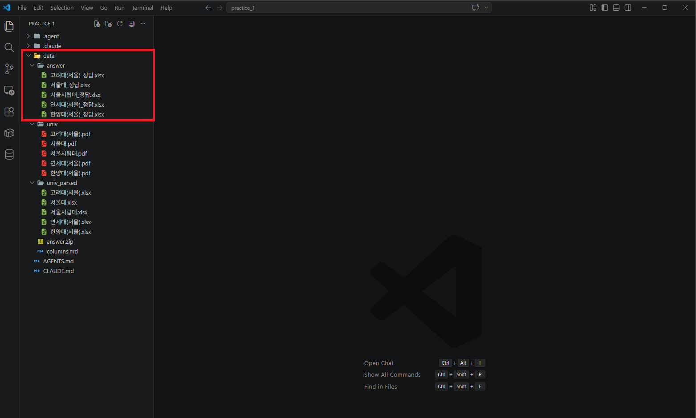
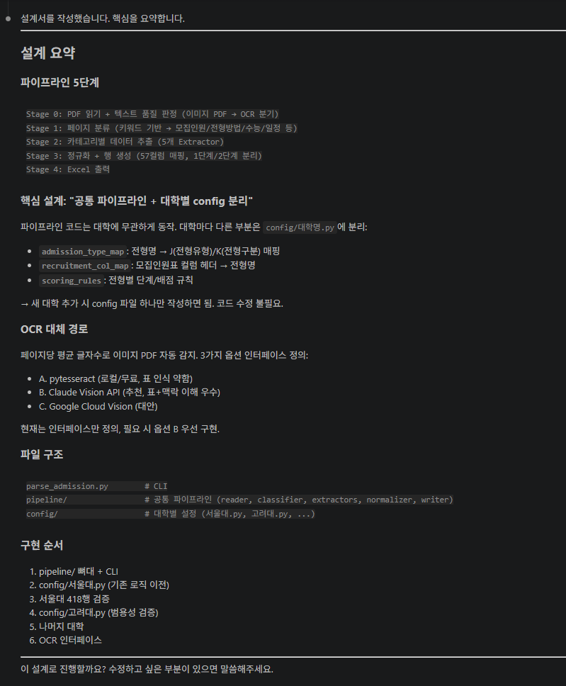
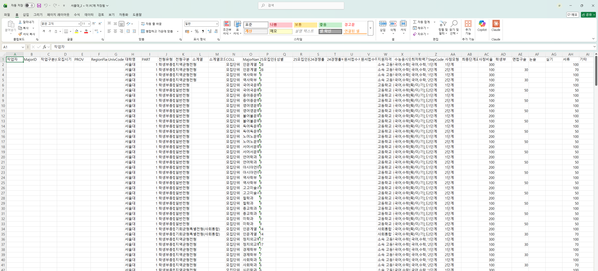

Stage 2. 자동화 설계 + 검증¶
← 이전 Stage 1. 디테일 채워주기 · 다음 → 마무리. Skill 맛보기
Stage 1까지는 "이 PDF 하나"를 잘 채우는 과정이었습니다. 이제는 다른 대학 PDF에도 돌릴 수 있는 자동화 스크립트를 만들고, AI가 직접 교차 검증하도록 합니다.
이번 단계 (약 25분)
- 프롬프트 ① 자동화 설계 + 구현 요청
- 프롬프트 ② AI 교차 검증 + 정답 Excel 비교
- 사람 확인은 간단한 10분 프로토콜로
가장 중요한 조건
- 지금 PDF 하나에만 맞는 코드로 만들면 안 됩니다
- 페이지 번호 고정이 아니라, 제목·표 의미 같은 구조적 신호로 동작해야 합니다
2-1. 자동화 설계 + 구현¶
하나의 프롬프트로 설계부터 구현까지 한 번에 요청합니다. AI는 설계를 먼저 보여주고 확인을 기다립니다.
AI에게 이렇게 말해보세요 — 자동화 설계 + 구현 요청
이제 본격적으로 파싱 도구를 만들어줘. 중요 조건:
1. 이 도구는 다른 대학 모집요강 PDF에도 쓸 거야.
- 공통 파이프라인은 일반화하고,
- 대학별 미세조정이 필요한 부분은 따로 드러나게 설계해줘.
- "page 3" 같은 페이지 번호 하드코딩은 금지.
제목/소제목/표 의미 같은 구조적 신호로 찾아줘.
2. 이 순서로 만들어줘:
① PDF 전체를 훑어 우리가 원하는 정보가 있는 페이지를 자동으로 찾기
② 해당 페이지에서 표·텍스트 추출
③ 정해진 컬럼 형식으로 정리
④ Excel 저장
3. 텍스트가 거의 안 뽑히면 이미지형 PDF일 수 있으니
OCR/Vision API 대체 경로도 설계에 포함해줘.
먼저 전체 설계를 보여주고, 내가 확인한 뒤에 코드를 작성해줘.
AI가 설계 초안을 보여주면 아래 한 줄을 그대로 보내 설계를 확정합니다. 코드를 만들되 아직 실행은 하지 말라는 뜻입니다.
2-2. AI 교차 검증 + 정답 Excel 비교¶
스크립트가 만들어졌으면 실행 → 검증 → 정답 비교를 한 프롬프트로 묶어 요청합니다. 그 전에 정답 파일을 먼저 받아둬야 AI가 비교 리포트를 만들 수 있습니다.
📥 먼저 정답 파일 받기¶
실습 도중 강사가 팀즈 채팅방에 answer.zip 을 공유합니다. 다음 순서로 처리해주세요.
- 팀즈에서
answer.zip다운로드 — 보통 다운로드 폴더로 저장됩니다 practice_1/data/폴더로 옮기기 — 파일 탐색기에서 잘라내기 → 붙여넣기로 옮기거나, VSCode 탐색기로 끌어다 놓습니다data/안에서answer.zip압축 해제 — 더블클릭(또는 우클릭 → 압축 풀기)하면 같은 위치에answer/폴더가 생기고, 안에 대학별 정답.xlsx5개가 들어 있습니다
VSCode 탐색기가 아래처럼 보이면 준비 완료입니다.

왜 꼭 data/ 안에 풀어야 하나요
아래 프롬프트의 @data/answer/서울대_정답.xlsx 같은 경로를 AI가 그대로 인식하려면 정답이 data/answer/ 위치에 있어야 합니다. 다른 곳에 풀면 프롬프트의 경로를 직접 수정해야 합니다.
그 다음 프롬프트 보내기¶
AI에게 이렇게 말해보세요 — 실행 + 자체 검증 + 정답 비교
서울대 PDF로만 스크립트를 실행해서 결과를 보여줘. 그리고:
1. [AI 자체 검증] 원본 PDF를 직접 열어서 추출 결과와 나란히 비교해줘.
- 페이지 걸친 표, 셀 병합이 제대로 처리됐는지
- 비어야 하지 않을 칸이 비어 있지는 않은지
- 숫자 칸에 이상한 글자가 없는지
- 행 수가 원본 데이터 수와 맞는지
2. [정답 비교] 정답 파일도 줄게 → @data/answer/서울대_정답.xlsx
내가 만든 결과와 자동으로 비교해서 다음을 리포트로 보여줘:
① 전체 정답률
② 컬럼별 정답률
③ 틀린 칸 목록 (몇 행·어떤 컬럼·내 값·정답 값)
④ 빠진 행 / 추가로 생긴 행
3. 틀린 부분이 보이면 왜 틀렸는지, 서울대에만 맞춘 수정이 아닌지도
설명해줘.
이런 결과물이 나옵니다¶
AI가 스크립트를 돌리고 스스로 검증하면서 보여주는 실제 화면입니다.

위 화면에서 주목할 점
- 구조 탐색 → 표 추출 → 컬럼 정리 → 저장 순서가 단계별로 보입니다
- 각 단계에서 몇 개의 레코드가 처리됐는지 숫자가 뜹니다
- 문제가 있으면 "여기서 N개 행이 누락된 것 같습니다"처럼 AI가 스스로 지적합니다

이런 리포트가 나오면 성공입니다
- 전체 정답률 이 한눈에 보임
- 컬럼별 정답률로 약한 컬럼이 드러남 (예: "수능응시영역만 60%")
- 틀린 칸 목록이 있어서 바로 다음 피드백을 만들 수 있음
정답률은 점수표가 아니라 진단표입니다. 어떤 규칙/컬럼에서 반복적으로 틀리는지 설명할 수 있게 되는 것이 목표입니다.
(선택) 사람이 10분만 눈으로 확인하기¶
자동 비교만으로 부족할 때 쓰는 3단계 프로토콜입니다.
효율적인 사람 확인 (약 10분)
- 처음 10행 전수 확인 (3분) — 반복 오류 패턴을 찾음
- 패턴 점검 (2분) — 그 패턴이 나머지 행에도 있나 필터링
- 랜덤 5건 확인 (2분) — 중간·끝쪽에서 샘플링해 새로운 오류 유형 확인
사람이 특히 잘 잡는 오류: 모집인원 오독, 학과 누락, 셀 병합 해석 실패, 날짜 형식 불일치
이런 일이 생길 수 있다 (접혀 있음)
"일반화했다"는데 페이지 번호가 하드코딩돼 있음
→ "page 3 같은 고정 숫자가 보여. 구조적으로 찾는 방식으로 바꿔줘."
스크립트가 10분 넘게 돌아감 → "지금 어디까지 진행됐는지 알려주고 진행률을 보여줘."
결과가 Stage 1보다 오히려 나빠짐 → "Stage 1 결과보다 빈칸이 늘었어. 뭐가 달라졌는지 비교해서 보여줘."
왜 틀리는지 감이 안 옴 → "추측하지 말고 원본 PDF를 페이지별로 열어서 추출 결과와 나란히 비교해줘."
체크포인트¶
- AI가 일반화 가능한 파싱 흐름을 설계·구현했습니다
- 스크립트를 실행하고 AI 자체 검증을 받았습니다
- 정답 Excel과 자동 비교해 정답률 리포트를 받았습니다
- 반복 오류 패턴이 무엇인지 한두 줄로 말할 수 있습니다
← 이전 Stage 1. 디테일 채워주기 · 다음 → 마무리. Skill 맛보기